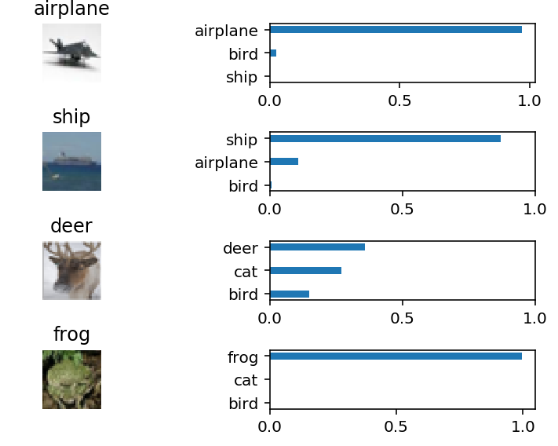

Willhaben is the biggest advertising portal in Austria and therefore
the best place to buy condominiums. I wrote a webscraper in Python
to extract all advertisements from the Willhaben-Website and
save them to a MySQL Database. A webscraper is basically the same thing as
Google is using to crawl the web for their search engine. My
webscraper extracted about 4.000 condominiums in the area of my hometown (Graz),
which can be used for detailed analytics.
Now cherry picking is pretty easy.
I made a pretty cool visualization of the data for you by using the
3D-Map feature of Microsoft EXCEL.
Electricity can be found almost anywhere,
NRGkick makes it accessible
for your electric car – NRGkick enables a charging
power up to 22kW, while delivering full transparency and advanced control
options to your smartphone.
Developing the early versions of the Android-App was really an awesome project.
Unfortunately, this project is strictly private.

Image Recognition
During the Udacity-Deep-Learning-Course I was playing around with the CIFAR-10 dataset, which consists of
60000 32x32 images in 10 classes. The dataset consists of airplanes,
dogs, cats, and other objects. I've trained a convolutional neural
network to predict the class of the image.
The accuracy of my network was at 65% at the testing set. Maybe
that's even better than some humans can do!? The record for this
dataset can be found here.
By the way, deep neural networks are also used to detect road signs for self driving cars.
I'll provide a link to the Github repository as soon as I have uploaded it.
Take a Break
This python program will remind me to take some breaks from long
working sessions on my computer by opening my favourite video in the
browser every 2 hours.
This little Python-project will create and open a website with some of my
favourite movies right now. You can even play the trailer of the
movies by clicking on the images.